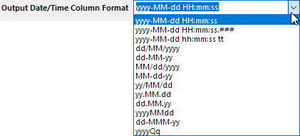

| Neu berechnen |
Legen Sie den Neuberechnungsmodus fest.
|
| Quellzeit |
Bestimmen Sie den Bereich, der als Zeitquelle für das Zeitintervall verwendet wird. |
| Quelldaten |
Legen Sie den Bereich der zu entstapelnden Datenwerte fest. |
| Zeitintervall |
Optionen:
- Jahr
- Monat
- Woche
- Tag
- Hour
- Minute
|
| Anfangswert |
Legen Sie den Wert für die Anfangszeit für jede entstapelte Gruppe fest.
- Wenn Sie Jahr als Zeitintervall auswählen, können Sie das festgelegte Datum als Anfangswert bestimmen. Format: MM/dd oder JAN oder 1(Nummer des Monats).
- Wenn Sie Monat als Zeitintervall auswählen, können Sie den festgelegten Tag des Monats als Anfangswert bestimmen. Format: 1-28.
- Wenn Sie Woche als Zeitintervall auswählen, können Sie den festgelegten Tag des Wochenindex als Anfangswert bestimmen. Format:1-7.
- Wenn Sie Tag als Zeitintervall auswählen, können Sie die festgelegte Stunde und Minute als Anfangswert bestimmen. Format: HH:mm (13:00), 13, 1pm .
- Wenn Sie Stunde als Zeitintervall auswählen, können Sie die festgelegte Minute und Sekunde als Anfangswert bestimmen. Format: mm:ss.
- Wenn Sie Minute als Zeitintervall auswählen, können Sie die festgelegte Anzahl der Sekunden als Anfangswert bestimmen. Format: 0-60.
|
| Endwert |
Legen Sie den Wert für die Endzeit für jede entstapelte Gruppe fest. Das Format ähnelt dem Anfangswert.
- Wenn Sie Jahr als Zeitintervall auswählen, können Sie das festgelegte Datum als Endwert bestimmen. Format: MM/dd oder JAN oder 1(Nummer des Monats).
- Wenn Sie Monat als Zeitintervall auswählen, können Sie den festgelegten Tag des Monats als Endwert bestimmen. Format: 1-31.
- Wenn Sie Woche als Zeitintervall auswählen, können Sie den festgelegten Tag des Wochenindex als Endwert bestimmen. Format:1-7.
- Wenn Sie Tag als Zeitintervall auswählen, können Sie die festgelegte Stunde und Minute als Endwert bestimmen. Format: HH:mm (13:00), 13, 1pm .
- Wenn Sie Stunde als Zeitintervall auswählen, können Sie die festgelegte Minute und Sekunde als Endwert bestimmen. Format: mm:ss.
- Wenn Sie Minute als Zeitintervall auswählen, können Sie die festgelegte Anzahl der Sekunden als Endwert bestimmen. Format: 0-60.
|
| Ausgabearbeitsblatt |
Legen Sie fest, wo die Ergebnistabelle ausgegeben wird. |
| Zusätzliche Beschriftungszeile(n) |
Beschriftungszeilen für den Wert Jahr/Monat/Datum/Stunde/Minute etc. hinzufügen. |
| Format der Ausgabespalte für Datum/Zeit |
Wählen Sie das Format der Datums-/zeitspalte in der Auswahlliste.

|